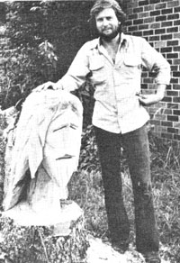
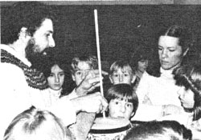

BILLY MIDDLETON:
CHAIN-SAW SCULPTURE
One day as Billy Middleton whizzed and whirred his way through a stack of logs with his chain saw, he began to envision facial features, torsos, and full human and animal figures in the pile of lumber. A multitude of configurations suggested themselves to the woodcutter, and-impulsively-he gave in to the urge to zip through some of the sturdier tree stumps, fashioning forms as they came to mind.
Before long the sculptor had a yardful of specimens that curious friends, neighbors, and passers-by stopped to admire and folks began commissioning him to produce wooden originals on their property. Instead of struggling, or paying someone else, to remove stubborn stumps, homesteaders asked Billy to decorate them . . . business people figured that the unusual artwork would attract customers to their shops . . . and one enterprising hardware store proprietor invited the carver to demonstrate his craft as part of the establishment's grand opening celebration.
Billy's advice to property owners is to take a long, hard look before removing any tree stumps. "There's a good chance," he says, "that you'll see some fascinating figures just waiting to be coaxed to the surface by your chain saw."-Sheila Clendenning.
THE BRAFFORD FAMILY: RAMPANT RADIOACTIVITY
On May 6, 1981 the Brafford family (Neil, Genevieve, and their three small children) filed a $40,000,000 lawsuit against the Susquehanna Corporation . . . seeking damages for exposure to extremely high levels of radon gas and radiation, which emanated from uranium mill tailings found underneath their home in Edgemont, South Dakota. The tailings, which were-it is believed-used as landfill when the house was built, were produced by a mill that was operated by a Susquehanna subsidiary from 1956 to 1972.
Survey teams first recorded dangerous levels of radiation in the Brafford home, as well as in a number of other structures in Edgemont, back in 1971 . . . but the residents were not even notified of the situation until January of 1980. At that time the state of South Dakota informed Neil Brafford that excessive levels of radon gas had been detected in his house (the highest readings were recorded in the basement room which had served as his five-year-old son's sleeping quarters for almost two years). Forced to evacuate their home, the family is also faced with the prospect of increased risks of cancer, genetic disease, and other illnesses.
Concerned citizens quickly joined in organizing a committee to help the family raise the funds necessary to see the litigation through. To volunteer time, services, or donations, write to the Brafford Family Support Committee, Dept. TMEN, P.O. Box 2398, Rapid City, South Dakota 57709.- J.V.
TONY PIZZO: ORPHIC ENDEAVORS
Adults and children alike take part in Tony Pizzo's music workshop, Orphic Endeavors, when the traveling teacher comes in town Tony visits schools trod craft centers all over Vermont and New Hampshire, showing people how to create their own instruments. Most of the musicmakers featured in his workshop originated in such exotic places as Africa and the Orient, but the materials the instructor uses to build them are likely to be found on just about any homestead.
With such items as pieces of Masonite hardboard, scrap lumber, coffee cans, and lengths of old water pipe, Pizzo shows folks how to fashion hammered dulcimers, Japanese kotos, and bowed psalteries at a cost of less than $5.00 apiece . .. and each student is also taught how to play the instrument(s) that he or she constructs.
Tony describes his program as "ordered yet flexible", since his instruction in the design, construction, and playing of various folk instruments can easily be adapted to meet the needs of a particular school, adult group, or arts festival. For information, write Orphic Endeavors Instrument Workshop, Dept. TMEN, RFD 1, Lunenburg, Vermont 05906.-Thomas Woods.
DAVID JAMES: CULTIVATING SKILLS
When David James was asked to develop a 4-H horticulture program (as part of his job with the Josephine County Extension Office in Grants Pass, Oregon), he decided to organize a gardening/greenhouse club for mentally retarded adults. Participants in the program now grow flowers, shrubs, and ground covers for local parks . . . houseplants for city offices . . . and a variety of prizewinning vegetables (which have earned the gardeners almost $800 in county-fair award premiums). The club donates a portion of its garden harvest to SALT, the community senior citizens' meal program . . . and a number of David's proteges have-as a result of their horticultural training-been able to obtain jobs with the city parks department.
What's more, the program's accomplishments have inspired its organizer to set up a business called Greenleaf I Industries, Inc., a selfsupporting wholesale nursery that will be staffed by the developmentally disabled. "If this project proves as successful as I'm convinced it will," says David, "I hope it'll serve as a pilot program . . . inspiring the establishment of similar projects in other areas throughout the country."- Diane Westerlund.
IN BRIEF. . .
DR. JULIETTE KAROW has developed a nutritious taste treat that's deigned to compete-in both flavor and convenience-with today's popular junk foods. Just two of Dr. Karow's Mighty Muffins, when consumed with only four ounces of orange juice, can take the place of an entire meal for a "person on the go". A mix that will yield a dozen of the potent mini-cakes can be purchased-for $3.00 plus $1.50 postage-from the Mighty Muffin Baking Company, Inc., Dept. TMEN, Route 1, Box 859, West Point, Virginia 23181.
Retired engineer JOHN BIGELOW is in the process of establishing an Oregonbased group called the Upper McKenzie Valley Geothermal Council . . . as part of his 15-year effort to organize the development of the region's energy resources. Geologists have recorded steam temperature and pressure-four or five miles underneath John's hometown of McKenzie Bridge-at levels that are, he reports, "more than sufficient to turn a turbine to drive a generator".-J.V.
|
 |
 |
|